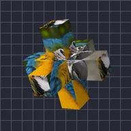

Salib Tiga Paksi

Meletakkan lapisan pada tiga bar yang bersilang di tengah.
Tetapan
| Tetapan | Jenis | Julat | Lalai |
|---|---|---|---|
| Putaran X | Sudut | -3600° hingga 3600° | -25° |
| Putaran Y | Sudut | -3600° hingga 3600° | -35° |
| Putaran Z | Sudut | -3600° hingga 3600° | 0° |
| Panjang | Nombor | 0.02 hingga 5 | 0.9 |
| Ketebalan | Nombor | 0.01 hingga 2 | 0.22 |
| Pelembutan | Nombor | 0 hingga 1 | 0.15 |
| Kedudukan | Titik (X, Y) | -5000 px hingga 5000 px | 0 px, 0 px |
| Skala | Nombor | 0.05 hingga 10 | 1 |
| Perspektif | Nombor | 0 hingga 1 | 0.5 |
| Lorekan | Nombor | 0 hingga 1 | 0.6 |
| Sudut Cahaya | Sudut | -3600° hingga 3600° | 135° |
| Kilauan | Nombor | 0 hingga 1 | 0.3 |